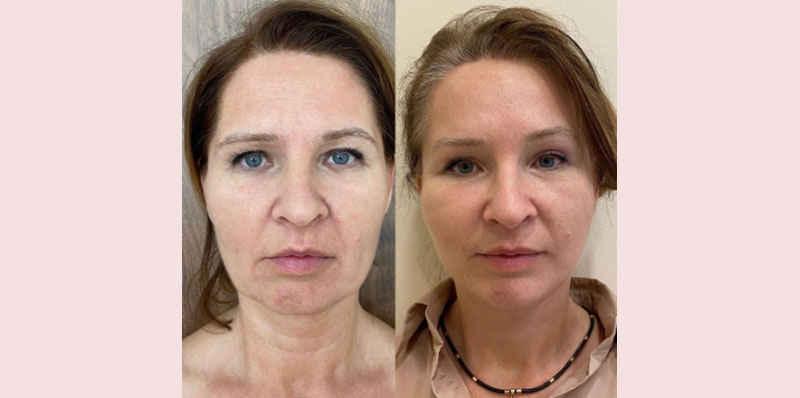

Beauty Routineslasīšanas laiks 5 min.
SEJAS SAVILKŠANA
Laiks mūs maina. Grumbiņas kļūst dziļākas, bet āda ne tik elastīga un starojoša, kā dažus gadus atpakaļ. Kāds pieņem dabiskās izmaiņas, bet lielākā daļa sieviešu vēlas palikt jaunas pēc iespējas ilgāk. Tāpēc tiek tērētas lielas summas regulārām kosmetologa apmeklēšanām, dārgu kopšanas līdzekļu iegādei un labāko plastikas ķirurgu pakalpojumiem. Bet, ja es jums teikšu, ka ir veids, kā apturēt novecošanas procesu dabīgā veidā? Jo plastikāta nepadara cilvēku jaunāku, tā padara tos citus. Es pastāstīšu jums, kā izlīdzināt struktūru un savilkt ādu, likvidēt maisiņus zem acīm un piešķirt svaigu izskatu, izmantojot tikai vienu līdzekli.

Pašā sākumā es gribu jums parādīt vienu no tūkstošiem pateicīgu atsauksmju. Mana paciente detalizēti apakstīja savu stāstu. Es nevarētu nodot viņas vārdus ir labāk.

Kad es pārklājos ar dziļām krunciņām, bija kauns valkāt dekoltē, un seju vispār neaizklāsi ar apģērbu. Mani krēmi pārstāja palīdzēt, radās nepieciešamība meklēt citus risinājumus.
Manas finanses neļauj man tērēties uz kosmetologu. Internetā sāku meklēt dažādus pretnovecošanas līdzekļus un sejas masāžas tehnikas. Izmēģināju daudz ko, jo īpaši paštaisītas maskas. Efekta praktiski nebija.
Galu galā es pārstāju izmantot tautas padomus un sāku meklēt atbildi speciālistu vidū. Tā es uzdūros rakstam, kur kosmetoloģe stāstīja par daudzu dārgu krēmu kaitīgumu un neefektivitāti. Man kļuva interesanti un es nolēmu pierakstīties pie viņas uz tiešsaistes konsultāciju.
Procesā kosmetoloģe man piedāvāja izmēģināt jauno krēmu . To pavisam nesen izlaida vadošā kosmētikas kompānija, bet tas jau bija kļuvis populārs pie zvaigznēm, blogeriem un skaistumkopšanas speciālistiem.

Krēmam ir divi milzīgi plusi – universāls un dabīgs sastāvs. Krēms ir piemērots acīm, sejai un kaklam. Sastāvā ietilpst liels daudzums dabīgu minerālu sastāvdaļu un mikroelementu, kas uzlabo ne tikai ādas stāvokli, bet arī aizvāc krunciņas, kas bojāja man dzīvi. Un pats galvenais, iegādāties vienu krēmu, kas novērš trūkumus visās problemātiskajās zonās, ir daudz izdevīgāk.
Krēma sastāvs palīdz izstrādāt kolagēnu. Ar vecumu šī funkcija mazināsies, bet krēms palīdz ādai atjaunoties 20 gados. Es uzreiz novērtēju efektu. nenosprosto poras, bet tieši otrādi-attīra un sašaurina tās. Pēc pāris dienām es sapratu, ka mana āda dienas laikā pārstāja kļūt taukaina un sausa (man ir kombinēta). Kā rezultāts divās nedēļās: mitrināta un tvirta.
Katru dienu es vērīgi aplūkoju savas grumbas. Dažas vairs nemanīju. Un, kad man beidzās kurss, tad kopā ar tukšiem iepakojumiem no krēma es izmetu 15 gadus.
Es esmu pateicīga jums, ka atklājāt man tādu pieejamu jaunības noslēpumu. Tagad es lietoju tikai .

Man vienmēr ir patīkami saņemt šādas siltas vēstules ar pateicībām. Es varu minēt daudz līdzīgu piemēru. Lūk, piemēram, Andžela, viņai ir 45 gadi.
Viņa atnāca uz konsultāciju, lai palēninātu novecošanos. Es veicu viņai pīlingu un uzklāju atjaunojošu sejas masku. Mājas ieteicu lietot krēmu . Pēc trim mēnešiem paciente atnāca pie manis pateicības pilna. Kas ir mainījies pa šo laiku? Pirmkārt aizgāja virsējais mirušais epidermas slānis, atjaunojās asinsrite. Tas ļāva noderīgajām krēma vielām iekļūt ādas dziļākajos slāņos. Samazinājušies maisiņi zem acīm, dziļās mīmikas grumbas, savilcies sejas ovāls, pacēlušies plakstiņi. Ādas kvalitāte kļuvusi daudz labāka, jo ir izzudis sausums un pigmenta plankumi.

Marija savos 42 gados biju ļoti neapmierināta ar savu izskatu. Sausums, dziļas grumbas, nelīdzenumi un pietūkums. Bija ieplānota pakāpeniska korekcija kopā ar biorevitalizāciju, mezodiegiem, botulotoksīniem, pīlingiem noteiktā secībā. Ādas kopšanai mājas apstākļos es ieteiktu . Bet sakarā ar veselības problēmām, paciente nespēja ierasties un trīs mēnešus lietoja tikai krēmu. Rezultāti pārspēja ne tikai viņas, bet arī visas manas cerības. Izzuda mīmiskās krunciņas, pigmentācija un sausa āda, uzlabojās ādas struktūra un sejas krāsa, bez papildu kosmētiskajām procedūrām.

Pēc šī eksperimenta es sāku ieteikt daudziem saviem pacientiem, kuriem ir grūtības ar ādas kopšanu.
daudzām sievietēm nav iespējas regulāri apmeklēt kosmetologu un tērēties uz lāzerkorekciju, mezoterapiju, filleriem, biorevitalizāciju un citām procedūrām. ne sliktāks par profesionālu kopšanu aktivizē ādas dabīgo kolagēna izstrādi, atjaunojot to slāni pa slānim, padarot grumbas mazāk pamanāmas. Un pats galvenais, krēms ir pieejams katram un iegādāties to var ne tikai pie kosmetologa, bet tieši no ražotāja.
Šodien es gribu uzdāvināt jums personīgo atlaidi krēma iegādei. Jūs varat pasūtīt to ar 50% atlaidi. Ceru, ka šis līdzeklis mainīs vēl kāda cilvēka dzīvi uz labo pusi.